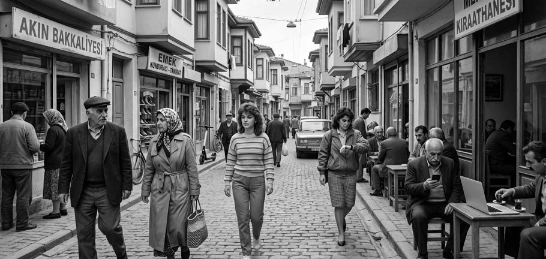

MEB ders materyalinin altı öğrenme birimi: kitaptaki tüm konular, Sıra Sizde çalışmaları, etkinlikler ve ölçme-değerlendirme soruları etkileşimli hâlde.
← → ok tuşları · ☰ içindekiler · F tam ekran · 📖 düğmeleri kitaptaki soruları açar
Bilişim dünyasında tartışılan etik ve doğru davranış ilkeleri, Anadolu'da yüzyıllar önce Ahilik Teşkilatı ile hayat bulmuştur. Ahi Evran tarafından kurulan bu sistem yalnızca ticari bir örgütlenme değil, aynı zamanda bir ahlak ve eğitim okuludur.
Ahilikte dürüstlük, başkasının hakkına saygı ve topluma faydalı olmak en temel kurallardır. Bir Ahi ustası ürettiği ürünün sağlamlığından sorumluysa bugünün yazılımcıları ve veri bilimcileri de geliştirdikleri sistemlerin doğru, adil ve zararsız olmasından sorumludur.
13. yüzyılda bir ustanın pabucunun dama atılmasına neden olan kusurlu üretim; bugün güveni sarsan etik dışı yazılımlar ve veri ihlalleriyle benzer bir sorumluluk taşır.
Her durum hangi ilkeyle ilgili?
Bilişim ve yapay zekâ etiğiyle ilgili ifadeleri ilkinden başlayarak dikkatlice oku. İfadenin doğru ya da yanlış olduğuna karar ver ve verdiğin yanıta göre belirtilen ifadeye geçerek ilerle.
Tüm adımları takip ederek ulaştığın çıkış noktasını belirle. Kararlarını ve nedenlerini arkadaşlarınla paylaşarak yorumla.
Kitaptaki şemada 8 çıkış vardır; yalnızca biri tüm kararları doğru verenlerin ulaştığı çıkıştır.
Boş kutulara gelebilecek fikrî ve sınai mülkiyet kavramlarını yerleştir.
2011'de fotoğrafçı David Slater, Endonezya'nın Sulawesi Adası'nda nadir görülen siyah makak maymunlarını fotoğraflamak için doğa gezisine çıktı. Slater kamerasını hazırlarken Naruto adlı bir makak kamerayı alıp deklanşöre bastı ve kendi fotoğrafını çekti. Kare özçekim maymun olarak ün kazandı ama hukukta büyük bir tartışma başlattı: Bu fotoğrafın telif hakkı kime aitti?
2019, Avrupa. Finans bölümündeki bir çalışan aranır; arayan kendini şirket yöneticisi olarak tanıtır. Ses, tonlama ve konuşma biçimi yöneticiye son derece benzer.
Acil bir ödeme yapılması gerektiği söylenir ve belirli bir hesaba para transferi istenir.
Çalışan, karşısındakinin gerçekten yöneticisi olduğunu düşünerek talimatı yerine getirir.
Dolandırıcılar yapay zekâ ile yöneticinin sesini taklit etmiştir: deepfake. Şirket maddi kayba uğrar.
Bilgi kirliliğini artıranlar: sınırsız erişim, bilgiyi ilk duyuran olma hevesi ve teyit etmeden paylaşma aceleciliği.

Görsel 1.1: Tarihi bilinmeyen bir görselGörsel 1.1'in 1980'lere ait olduğu düşünülüyor. Fotoğrafı incele; teknik tutarsızlıkları ve zamana aykırı unsurları (anakronizm) tespit et.
Amaç: Yapay zekâ tarafından üretilmiş veya manipüle edilmiş içerikleri ayırt edebilmek, dijital içerikleri doğrulamak ve eleştirel bakış açısı kazanmak.
Dijital güvenlik; bireylerin bilgilerini, cihazlarını ve sistemlerini yetkisiz erişimlere, zararlı yazılımlara ve siber tehditlere karşı koruma sürecidir. Önemli parçası olan bilgi güvenliği üç ilkeye dayanır:
Kullanıcının bilgisi dışında cihaza yerleşip sisteme zarar veren, verileri ele geçiren veya cihazın kontrolünü alan yazılımlar. Genellikle bilinmeyen dosya indirme, sahte linke tıklama gibi işlemlerle bulaşır.
Gerçek parolanı yazma! Benzer bir kombinasyon dene. Ölçütler kitaptaki Güçlü Parola Özellikleridir.
Bilgi Teknolojileri ve İletişim Kurumu tarafından hazırlanan internet.btk.gov.tr, interneti bilinçli, güvenli ve sorumlu kullanmayı destekleyen resmî bir bilgilendirme kaynağıdır.
Güvenli internet profilleri, dijital bağımlılık, siber zorbalık, kişisel verilerin korunması, güçlü parola kullanımı gibi konularda rehber içerik sunar.
İnternet ortamında gerçekleştirilen her türlü etkinlik sonucunda geride bırakılan veri ve izlerin tümüdür; bireyin dijital kimliğini oluşturur ve uzun süre çevrim içi kalabilir. Tamamen ortadan kaldırılması mümkün değildir ama bilinçli yönetilebilir.
Dijital dünyada biriken gereksiz verilerin düzenli silinmesi ve cihazların optimize edilmesi sürecidir. Cihaz performansı artar, kişisel veriler korunur, fiziksel ve ruhsal sağlık desteklenir; depolanan her veri enerji tükettiği için çevresel sürdürülebilirliğe de katkı sağlar.
25 dk çalışma + 5 dk mola; döngü 4 kez tekrarlanınca 15–20 dk uzun mola.
Akıllı şehirler ve fabrikalar teknolojinin sürdürülebilirlikle birleştiği modellerdir. Singapur; trafik için sensör tabanlı akıllı ulaşım, elektrik kullanımını optimize eden akıllı binalar, yağmur suyu toplama, güneş enerjisi ve akıllı atık yönetimi kullanır. Akıllı fabrikalarda sensörlerle makineler anlık izlenir, arızalar önceden tahmin edilir.
Grid ifadelerine göre 4 soruyu 📖 düğmesiyle yanıtla.
Gerekçelerini 📖 düğmesiyle yaz.
| Aşama | Ne yapılır? |
|---|---|
| Giriş | Ham veri (metin, görsel, ses vb.) sisteme verilir. |
| İşleme | Algoritmalar veriyi parçalara ayırır ve kalıpları bulur. |
| Olasılık hesabı | Her olasılık için bir puan (ağırlık) hesaplanır. |
| Çıktı | En yüksek olasılıklı sonuç kullanıcıya sunulur. |
Programın nasıl çalışacağı programcının önceden belirlediği kurallarla tanımlanır: eğer-ise (if/else). Bilgisayar kuralları sırayla uygular, dışına çıkmaz.
Kuralların dışında bir durum çıkarsa sistem doğru sonuç üretemeyebilir.
Programcı her kuralı tek tek yazmak yerine bilgisayarın çok sayıda veri üzerinde eğitilmesini sağlar. Sistem kalıpları öğrenir; daha önce karşılaşmadığı durumlarda da tahmin yapabilir.
Daha esnek davranır, yeni durumlara daha kolay uyum sağlar.
| Karşılaştırma ölçütü | Klasik program | Yapay zekâ |
|---|---|---|
| Çalışma mantığı | Programcı tarafından yazılan kurallara göre karar verir. | Çok sayıda örnek görselden öğrenerek tahmin yapar. |
| Kullanılan bilgi | Kulak şekli, bıyık, burun yapısı, tüy deseni gibi önceden belirlenmiş özellikler kullanılır. | Model, eğitim verilerinden benzerlikleri ve farklılıkları öğrenir. |
| Kuralları kim belirler? | ✍️ boş · 📖 | ✍️ boş · 📖 |
| Örnek karar mantığı | “Bıyık varsa, kulaklar sivriyse ve yüz yuvarlaksa kedi olabilir.” gibi kurallarla çalışır. | ✍️ boş · 📖 |
| Yeni fotoğraflara uyum | Fotoğraf farklı açıdan çekilmişse, ışık azsa veya hayvanın bir kısmı görünüyorsa zorlanabilir. | ✍️ boş · 📖 |
Sarı satırlardaki boş alanları 📖 düğmesiyle doldur.
YZ, insanlar gibi anlayarak değil, büyük veri kümelerinden örüntü öğrenerek çalışır; doğruyu yanlıştan bilinçli ayırt etmez, en olası görünen cevabı üretir.
Halüsinasyon: Büyük dil modellerinin (LLM) gerçek dışı, uydurma veya hatalı bilgileri kendinden emin ve doğruymuş gibi sunmasıdır.
“Türkiye’de ilk bilgisayar ne zaman kullanılmıştır?” sorusunu bir YZ aracına sor, cevabı farklı kaynaklardan kontrol et.
YZ sistemleri çok büyük miktarda veriye ihtiyaç duyar; bu verilerin önemli bir kısmı kişisel bilgi içerebilir: konum, alışkanlıklar, tercihler, hatta sağlık verileri.
Bu verilerin izinsiz toplanması veya amacı dışında kullanılması mahremiyeti ihlal edebilir. Kullanıcılar hangi verilerinin alındığını bilmeli, sürece onay vermeli ve verilerini kontrol edebilmelidir.
Sabah arkadaşlarıyla futbol konuşan Arda, akşam sosyal medyada sürekli futbol videoları görür; biraz aşağı kaydırınca bilgisayar oyunu içerikleri çıkar. “Ben bunları aramadım ama neden hep ilgimi çeken şeyler karşıma çıkıyor?”
E-ticaret sitesinde geçen hafta baktığı spor ayakkabıya benzer ürünler, tam bütçesine uygun fiyatlarla önerilir. “Acaba bu uygulamalar neyi sevdiğimi nereden biliyor?”
Bir teknoloji müzesi “Yapay Zekânın Yolculuğu” sergisini yedi bölüme ayırır. Amaç: YZ’nin bir anda ortaya çıkmadığını; bilimsel gelişmeler, bilgisayar gücü, veri miktarı ve algoritmalarla bugüne ulaştığını göstermek.
Üretken yapay zekâ (Generative AI): Kullanıcının komutları doğrultusunda metin, görsel, ses, video gibi yeni içerikler oluşturan sistemler. Örn. şirketin reklam metni, mimarın proje görseli, yazılımcının kod testi.
Prompt: YZ modeline ne yapması gerektiğini söyleyen her türlü talimat, soru veya metin parçası. Ne kadar spesifik, net ve bağlam odaklı olursa yanıt o kadar isabetli olur: yeni nesil iletişim dili.
İlk soru: Bu yapay zekâdan hangi sonucu elde etmek istiyorum? Konu ve hedef açıkça belirtilmeli.
YZ’nin hangi bakış açısıyla (hangi uzman gibi) cevap vereceğini belirler; içerik daha hedefe yönelik ve uygun üsluplu olur.
Faydalı olduğu durumlar: uzmanlık alanına göre içerik, farklı bakış açıları, bir meslek grubunun dilini yansıtmak.
YZ’den tam olarak ne yapmasının istendiği; içeriğin türü ve yapılacak işlem.
Neden, kim için, hangi koşulda? sorularını yanıtlayan, görevin arka planı.
Bağlamda neler olabilir? Hedef kitle · Kullanım alanı · Sektör/konu · Amaç · Seviye
Uzunluk: 100 kelime · Dil: sade · Kapsam: avantajlar · Sınırlama: teknik terim yok
Örnekler YZ’ye yalnızca ne yapılacağını değil nasıl yapılacağını gösterir.
Milyonlarca görsel-metin ilişkisinden öğrenir: nesneleri tanır, nasıl göründüklerini öğrenir, metin ile görüntü arasında bağlantı kurar. Komut gelince metni ve anahtar kavramları analiz eder, kavramlara uygun yeni bir görsel üretir.
YZ’ye yalnızca metin değil bir görsel de verilebilir: “Bu arabayı bir Osmanlı sokağında, kırmızı renkli şekilde ve çizgi film tarzında göster.”
Derin öğrenme tabanlı modeller binlerce saatlik konuşmayı analiz eder; sesler robotik değil akıcı, doğal ve duygusal olabilir.
Bir ses kaydıyla belirli bir kişinin sesi taklit edilebilir; hız, ton, aksan, duygu değiştirilebilir.
Kullanım alanları: ders anlatımı, sesli kitap, reklam, podcast, görme engelliler için erişilebilirlik, navigasyon, sanal asistan, çağrı merkezi.
Süreç: platforma giriş → Text to Speech bölümü → metni gir → ses (kadın/erkek, dil, aksan, amaç) seç → ton, hız, vurgu ayarla → dinle ve düzenle.
Avantajlar: zaman tasarrufu, teknik bilgi gereksinimini azaltma, yaratıcılığı destekleme.
“Geleceğin Dünyası” temalı 1–2 dakikalık dijital hikâye: bir karakter, bir problem ve çözüme yönelik olay akışı.
Bir işin veya sürecin insan yerine makineler, yazılımlar veya sistemler tarafından yürütülmesidir.
Amaçlar: zaman tasarrufu · hata oranını azaltma · verimliliği artırma. İnsanlar yaratıcı ve karar gerektiren işlere odaklanır.
Örnekler: üretim bandında otomatik paketleme, siparişlerin otomatik kaydı, alarm, e-postaların otomatik sınıflandırılması, paylaşımların belirli saatlerde yayınlanması.
Bu demo anahtar kelimelere bakan basit bir simülasyondur; gerçek sistemler doğal dil işleme kullanır.
Platformlar genellikle no-code (kodsuz) ve low-code (az kodlu) yapılar sunar; sürükle-bırak mantığıyla akıllı iş akışları kurulur.
Güçlü alanlar: doğal dil işleme, görsel analiz, öneri sistemleri, tahminleme.
Kitap: Kural tabanlı chatbot farklı bir ifade kullanıldığında doğru cevap veremeyebilir; YZ destekli chatbot “Kargom nerede?”, “Siparişim gelmedi.”, “Ürünüm hâlâ ulaşmadı.” cümlelerinin aynı anlama geldiğini anlayabilir.
Akış: Kullanıcı mesaj gönderir (Tetikleyici) → sistem mesajı alır (Veri) → analiz (YZ / kural kontrolü) → cevap belirlenir (Karar) → yanıt (Çıktı).
Veri: sistemlerin işleyebildiği her türlü bilgi (kullanıcı adı-şifre, mesajlar, sipariş bilgileri, tarih-saat).
Entegrasyon: farklı sistemlerin birbirine bağlanarak veri alışverişi yapabilmesi. Aynı veri tekrar tekrar girilmez, hatalar azalır, süreçler hızlanır.
API (Application Programming Interface): Uygulama veri ister → API isteği ilgili sisteme iletir → sistem veriyi gönderir. Sistemler doğrudan bağlı olmadan iletişim kurar.
Gerekçelerini 📖 düğmesiyle yaz.